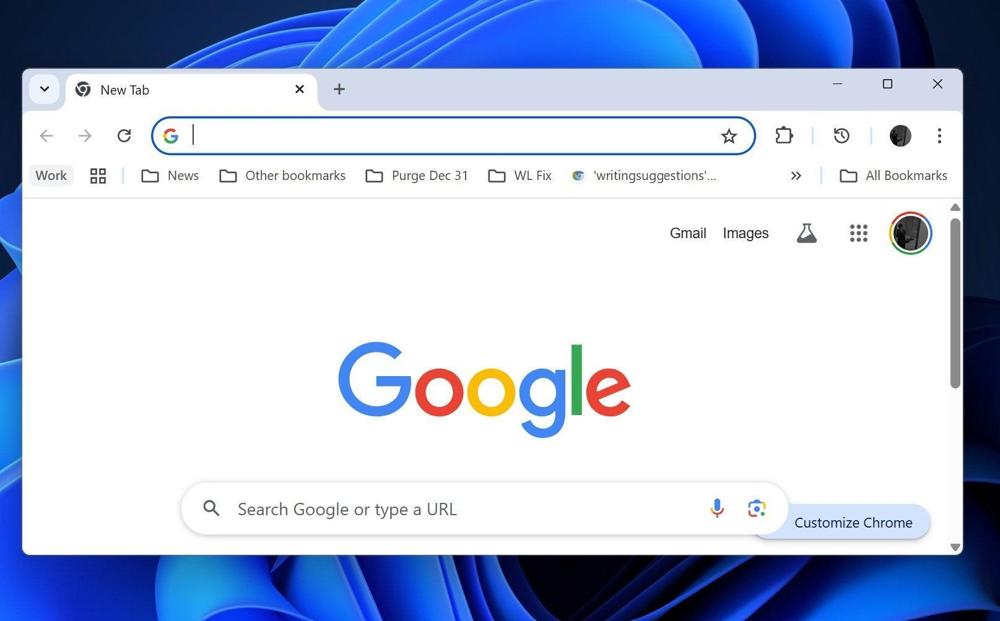
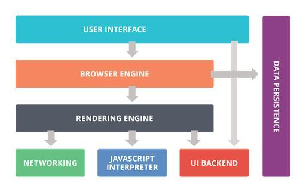
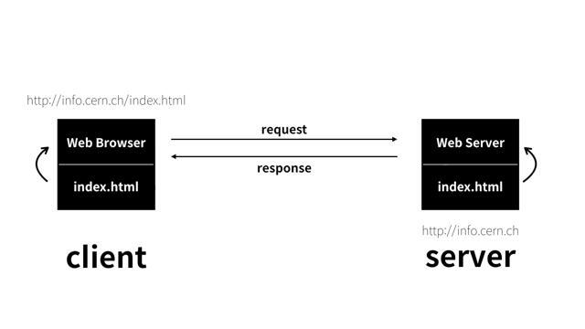
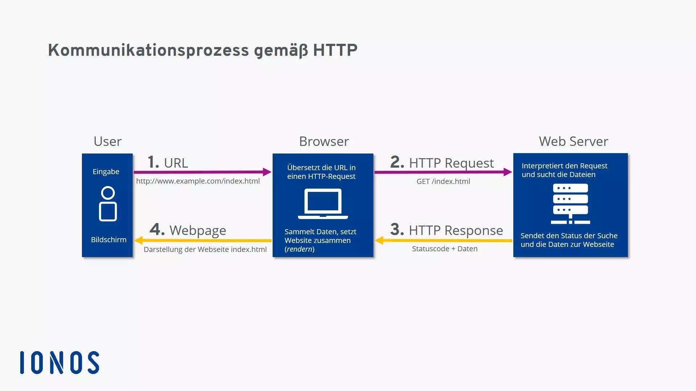
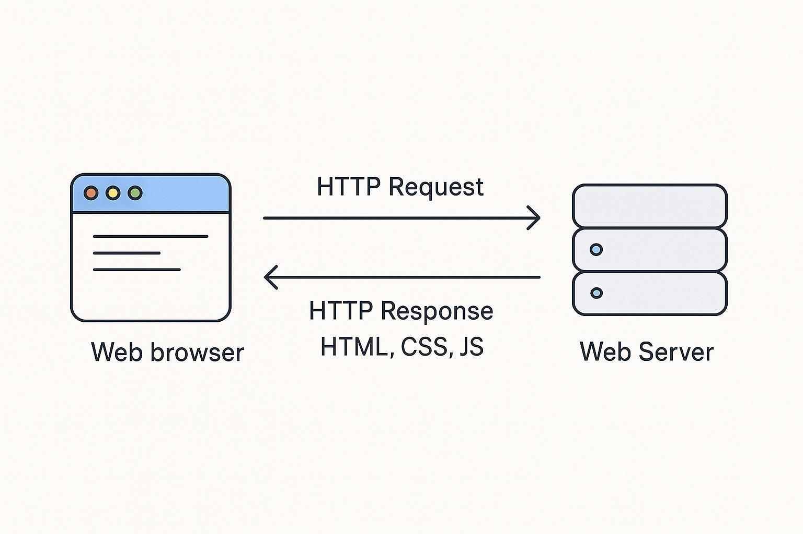
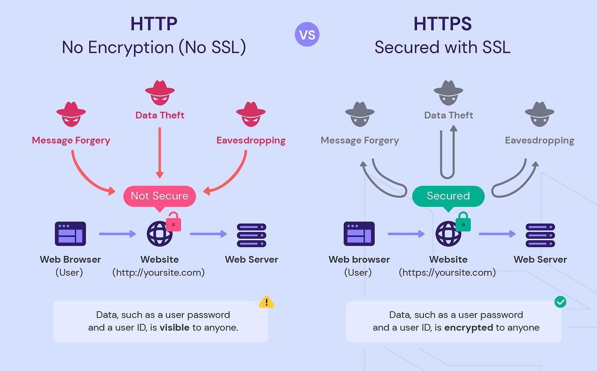
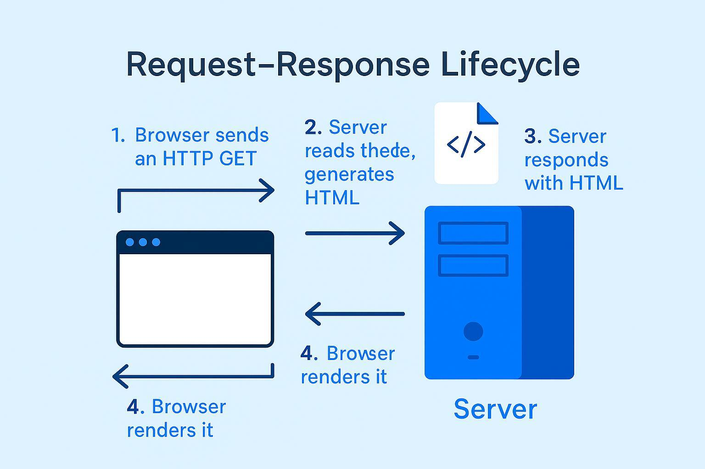

How the Web Works
Understand how browsers, servers, and the Internet communicate when accessing websites.
Explore Resource →Every time we visit a website, watch an online video, or search for information, web browsers and web servers work together behind the scenes.
A web browser allows users to access and view websites, while a web server stores website files and delivers the requested information to the browser.
Communication between browsers and servers commonly uses HTTP or HTTPS protocols.
At the end of this lesson, students should be able to:
A web browser is an application software used to access, retrieve, and display information available on the World Wide Web.
It allows users to visit websites by entering a URL (Uniform Resource Locator) in the address bar. A browser can display different types of content, including text, images, audio, video, and animations.

Google Chrome, Mozilla Firefox, Microsoft Edge, Safari, and Opera are examples of commonly used web browsers.
Browsers allow users to visit websites by entering a website address or URL.
They interpret HTML, CSS, and JavaScript to display webpages.
Users can move between webpages using links, navigation buttons, and browser tabs.
Browsers can store bookmarks, browsing history, cookies, and cached website resources.
Browser architecture refers to the internal components that work together to process and display web content.

The controller manages user input and coordinates the actions of the browser components.
The interpreter processes instructions and interprets webpage content so it can be displayed.
Client programs handle communication through different protocols used to retrieve information from remote computers.
HTML is essential for displaying webpage structure. Modern browsers also process CSS for presentation and JavaScript for webpage behavior.
A web server is a computer system or software that stores, processes, and delivers website content to users through the Internet.
When a user requests a webpage, the web server receives the request, processes it, and sends the requested files or generated content back to the user's browser.
When you open a school website, your browser sends a request to the website's server. The server responds by sending the webpage files so your browser can display them.
Stores HTML, CSS, JavaScript, images, videos, and other website resources.
Receives and processes requests sent by web browsers.
Sends requested website files and information to the browser.
Can run server-side scripts and communicate with databases to generate dynamic content.
A 404 Not Found error appears when a server cannot find the requested webpage or resource.
Web servers use different architectures to handle multiple requests from users.

A concurrent server handles multiple client requests at the same time.
Uses an event-driven approach to handle multiple connections without creating a separate process for every request.
A widely used open-source web server known for flexibility and extensibility.
Internet Information Services is a web server software developed by Microsoft.
A lightweight web server designed for efficient performance.
A server environment commonly used to run Java-based web applications.
HTTP stands for Hypertext Transfer Protocol. It is an application-layer protocol used for communication between web browsers and web servers.
HTTP defines how requests and responses are formatted and transmitted across the web.

A browser sends an HTTP request to a web server. The server processes the request and returns an HTTP response containing the requested information or an error message.
| Method | Purpose |
|---|---|
| GET | Requests data or a resource from a server. |
| POST | Sends data to a server for processing. |
| PUT | Creates or replaces a resource at a specified location. |
| DELETE | Requests the deletion of a specified resource. |
HTTPS stands for Hypertext Transfer Protocol Secure. It is the secure version of HTTP.
HTTPS uses encryption through TLS (Transport Layer Security) to protect information exchanged between a browser and a web server.


| Feature | HTTP | HTTPS |
|---|---|---|
| Full Meaning | Hypertext Transfer Protocol | Hypertext Transfer Protocol Secure |
| Security | Does not provide TLS encryption by itself. | Uses TLS encryption. |
| Default Port | 80 | 443 |
| Website Address | http:// | https:// |
| Recommended Use | Not suitable for sensitive information without additional protection. | Recommended for websites, especially those handling private information. |
Web browsers and web servers communicate using a request-and-response process.

The user enters a URL in the browser.
The browser sends an HTTP or HTTPS request to the server.
The server locates or generates the requested resource.
The server returns the requested content or an error response.
The browser processes the received content and displays the webpage.
GET /index.html HTTP/1.1
Host: www.example.comThis example shows a browser requesting the index.html page from a web server.
This glossary presents important terms and definitions discussed in Chapter 2: Web Browsers, Web Servers, and HTTP/HTTPS.
A software application used to access, retrieve, and display information from the World Wide Web.
A computer system or software that stores, processes, and delivers website content to users.
Uniform Resource Locator. The address used to locate a resource on the Internet.
Hypertext Markup Language. The standard markup language used to structure webpage content.
Cascading Style Sheets. A language used to control the appearance and layout of webpages.
A programming language used to add interactive behavior and dynamic features to webpages.
The internal components of a browser that work together to process and display web content.
A component that processes and interprets instructions or webpage content.
A computer or application that requests information or services from a server.
A computer or software that provides resources and services to connected clients.
Hypertext Transfer Protocol. An application-layer protocol used for communication between browsers and web servers.
Hypertext Transfer Protocol Secure. The secure version of HTTP that uses TLS to protect data during transmission.
Transport Layer Security. A security protocol that helps protect information exchanged over a network.
The process of converting information into a protected form to prevent unauthorized reading.
A message sent by a browser to a server asking for a resource or an action.
A message sent by a server back to a browser containing the result of a request.
An HTTP method used to request data or a resource from a server.
An HTTP method used to send data to a server for processing.
An HTTP status code indicating that the requested resource could not be found.
The design and organization of server components used to process and manage client requests.
A widely used open-source web server software designed to deliver web content.
Internet Information Services, a web server software developed by Microsoft.
A lightweight web server designed for efficient performance.
A server environment commonly used to run Java-based web applications.
Review these terms to understand how browsers, servers, and HTTP/HTTPS work together when accessing websites.
Explore these additional references to improve your understanding of web browsers, web servers, HTTP, and HTTPS.
Understand how browsers, servers, and the Internet communicate when accessing websites.
Explore Resource →Learn about browsers and how they retrieve and display website content.
Explore Resource →Study HTTP requests, responses, methods, and how communication works on the Web.
Explore Resource →Understand how HTTPS and TLS help protect communication between browsers and web servers.
Explore Resource →Explore documentation about Apache and its web server features.
Explore Resource →Learn about Microsoft's Internet Information Services web server.
Explore Resource →Read the additional materials and practice identifying the differences between browsers, servers, HTTP, and HTTPS. Review the request-and-response process to strengthen your understanding.
Introduction to how browsers, servers, and the web communicate.
Visit MDN Web DocsDocumentation about Apache web server software.
Visit Apache Documentation